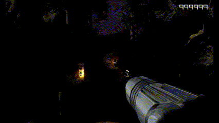
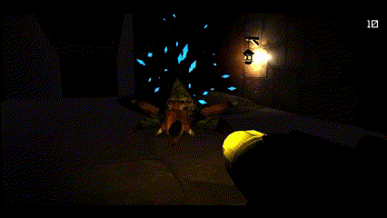

RPG Base Controller
Unveiling a Robust Third-Person Character Controller in Unity Engine, Empowered by Fluid Animations and Effortless Movement, All Scripted in C#. This base controller can be used to create a number of different RPG's.
Emerging Adversaries: Unleashing AI Enemies of Unparalleled Intellect and Ferocity within My Unity Game In my latest Unity game creation, I have introduced a formidable cast of AI enemies that bring a thrilling challenge to the player's journey. These AI adversaries have been meticulously crafted to exhibit both impressive intelligence and unwavering aggression

I then felt the game needed some sense of urgency to be completed. I added a mechanic where the players flashlight will dwindle over time and left power ups to recharge the flashlight hidden around the map. There is also a robust ammo system for each style of weapon.
Finally added a break in the players visor everytime they take damage. This gave the enemies attacks some impact and gave the player feedback. I also added a death screen letting the player know they are dead and giving them the ability to restart the level.